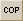

This topic describes how to define a compensator parameter in the Editor using one of two methods.
- Select the parameter text of an ASAP command line and manually enter angle brackets (<< >>) at the beginning and end of the text string. For example, to define a compensator parameter for the MOVE command, enter: MOVE Z <<-2>> and click the Compensator Parameter button.
- Select the numeric text of an ASAP
command line and add the angle brackets automatically by clicking the
Compensator Parameter button. After the brackets are inserted at the beginning
and end of the text, the Compensator Parameter button becomes inactive. Select
the Tolerance Table Update
 button on the
Tolerance Editor toolbar.
button on the
Tolerance Editor toolbar.